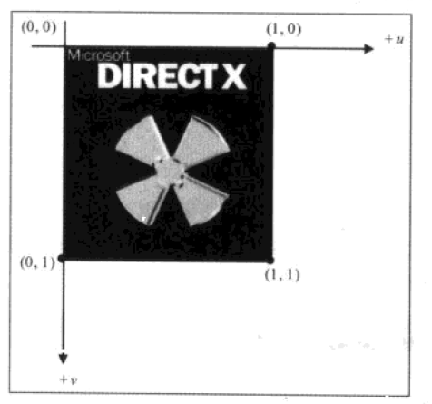
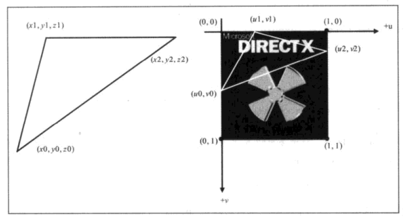
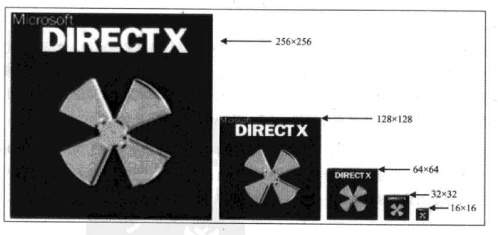
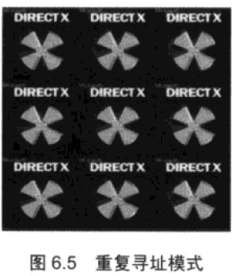
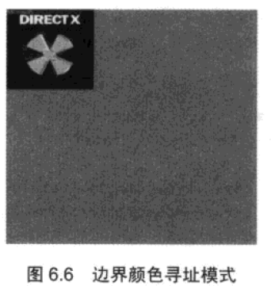
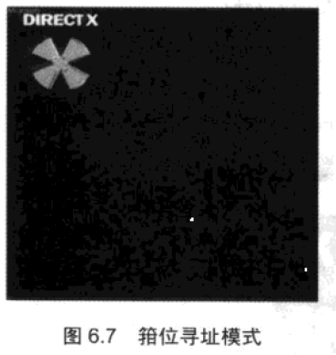

紋理映射
紋理映射
使用紋理
紋理過濾器
多級漸進紋理
尋址方式
example
紋理映射
紋理映射可以將圖像數據 映射到三角形單元中 使場景的細節更加真實
紋理坐標
D3Dx中將 紋理 存儲在一個 水平 u v 坐標系中

要使用 紋理 只需要 在點結構中 增加 u v 坐標描述即可

(左為一個三角單元 右為紋理其白色三角區域將被映射到右邊三角單元)
struct Vertex
{
//點坐標
D3DXVECTOR3 pos_;
//點法線
D3DXVECTOR3 vector_;
//紋理坐標
D3DXVECTOR2 texture_;
static const DWORD FVF;
Vertex()
{
}
Vertex(const D3DXVECTOR3& pos,const D3DXVECTOR3& vector,const D3DXVECTOR2& texture)
{
pos_ = pos;
vector_ = vector;
texture_ = texture;
}
};
const DWORD Vertex::FVF = D3DFVF_XYZ | D3DFVF_NORMAL | D3DFVF_TEX1;
注意
紋理坐標 會被限制到 [0,1] 之間 既 紋理最右邊 的 u 坐標 和 最下方的 v 坐標 為 1
使用紋理
從創建一個紋理 紋理保存在 IDirect3DTexture9 接口中 HRESULT D3DXCreateTextureFromFile( __in LPDIRECT3DDEVICE9 pDevice, __in LPCTSTR pSrcFile, //文件路徑 __out LPDIRECT3DTEXTURE9 *ppTexture //返回紋理接口 ); D3DXCreateTextureFromFile 支持 BMP DDS DIB JPG PNG TGA 文件 之後在繪製前使用 HRESULT IDirect3DDevice9::SetTexture( [in] DWORD Sampler, //紋理層 0 [in] IDirect3DBaseTexture9 *pTexture //使用紋理 ); 設置當前使用的紋理 使用 SetTexture(0,0) 可以禁用某層紋理 D3DX 可以使用最多 8層紋理
紋理過濾器
紋理映射時 三角單元 和紋理區域的大小可能不同 此時會發生 縮放 紋理過濾器 確定了 縮放算法 以確定 效果 使用 HRESULT SetSamplerState( [in] DWORD Sampler, //紋理層 [in] D3DSAMPLERSTATETYPE Type, //D3DSAMP_MAGFILTER (放大) D3DSAMP_MINFILTER (縮小) [in] DWORD Value ); 設置 放大 縮小 算法 value 取值 D3DTEXF_POINT 最近點採樣(此為默認使用算法) 速度最快效果最差 D3DTEXF_LINEAR 線性紋理過濾 將要使用可以獲取相當好的效果 D3DTEXF_ANISOTROPIC 各項異性紋理過於 效果最好 速度最慢
多級漸進紋理
為紋理創建一個多級 漸進紋理鏈 之後繪製使用 餘屏幕最合適的紋理 一個紋理漸進鏈 沒級是上一級 寬高 的一般  使用 HRESULT SetSamplerState( [in] DWORD Sampler, //紋理層 [in] D3DSAMPLERSTATETYPE Type, //D3DSAMP_MIPFILTER [in] DWORD Value ); 設置 多級紋理 使用方式 value取值 D3DTEXF_NONE 禁用多級漸進紋理過濾器 D3DTEXF_POINT 使用與三角單元最接近的紋理 D3DTEXF_LINEAR 使用與三角單元最接近的 兩個紋理 計算紋理
尋址方式
紋理的坐標為 [0,1] 之間 但我們可以指定 超過1 的坐標 不同的 尋找方式 指定了 如何 映射 超出 1 的映射方式 使用 HRESULT SetSamplerState( [in] DWORD Sampler, //紋理層 [in] D3DSAMPLERSTATETYPE Type, //D3DSAMP_ADDRESSU(u尋址) D3DSAMP_ADDRESSV(v尋址) [in] DWORD Value ); 設置 尋址 方式 Value 取值 D3DTADDRESS_WRAP  D3DTADDRESS_BORDER  D3DTADDRESS_CLAMP  D3DTADDRESS_MIRROR